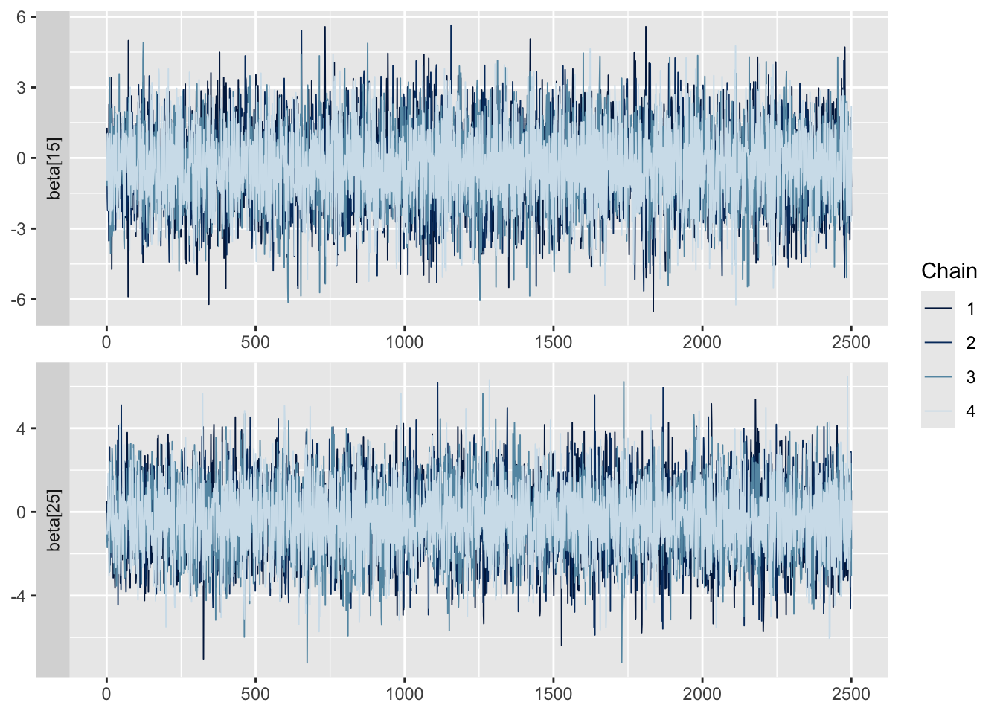
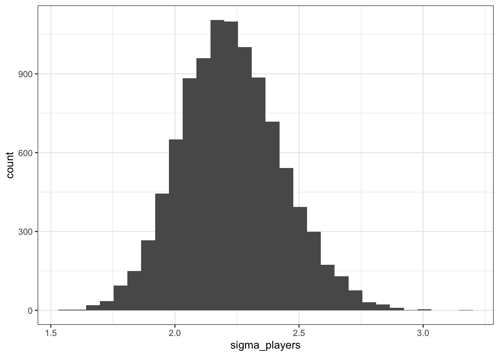
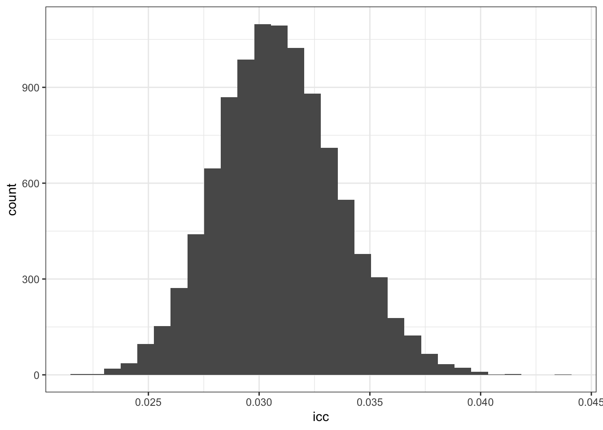

The purpose of this demo is demonstrate how to fit and examine the posterior distributions for a Bayesian regularized adjusted plus-minus (RAPM) model, in order to estimate the impact of basketball players when they are on the court, while adjusting for the quality of their teammates and opponents. We will use the same dataset from the intro_rapm.qmd demo. As a reminder, you can find the script (init_nba_rapm_data.R) for initializing this dataset on Canvas using the hoopR package.
The following code chunk reads in the wide data (assuming it is in the correct directory):
library(tidyverse)# Load the datanba_rapm_data <-read_csv(here::here("data/nba_2324_season_rapm_data.csv.gz"))nba_rapm_data
In this dataset, we have 31,885 unique shifts/stints with 572 players represented by the indicator variables (+1 if on court for home team, -1 if on court for away team, and 0 if not on court). Additional context is captured by the following variables:
Variable
Description
game_id
Unique game ID
stint_id
Unique identifier within a game for a stint for particular combination of home and away lineup (in appearance of order, where 1 is the first stint in the game)
n_pos
Number of possessions (combined for both home and away) during the observed stint
home_points
Number of points scored by the home team during the stint
away_points
Number of points scored by the away team during the stint
minutes
Length of the stint in terms of minutes played
margin
Common response for RAPM models defined as: (home_points - away_points) / n_pos * 100
Model set-up
We’re now going to proceed to set-up the Bayesian RAPM model. First, we’ll initialize our dataset in the manner appropriate for handling in Stan. This is similar to the intro_rapm.qmd demo since it is just based on creating a matrix for the players with a numeric vector for the response variable.
# Now for ease, create a dataset that only has the response and player columns:nba_margin_apm_model_data <- nba_rapm_data |> dplyr::select(-c(game_id, stint_id, n_pos, home_points, away_points, minutes))# Next set-up the design matrix of player indicatorsplayer_matrix <- nba_margin_apm_model_data |> dplyr::select(-margin) |>as.matrix()# And vector for the responsemargin_response <- nba_margin_apm_model_data$margin
Now with the data constructed, we can use Stan to simulate from the posterior distribution for the considered model parameters.
The following chunk below displays the Stan code that is also available in bayes_ridge_rapm.stan:
stan_ridge_model <-"data{ // Set-up the context in terms of dataset size int<lower = 0> N_shifts; int<lower = 1> N_players; vector[N_shifts] y; matrix[N_shifts, N_players] X_players; }// Now define the parameters we'll consider, with the player betas and two// variance components:parameters{ // Shift-level variance real<lower=0> sigma_shifts; // Player-level variance real<lower=0> sigma_players; // Vector of coefficients for players vector[N_players] beta; }// And now write out the modelmodel{ // Observation-level y ~ normal(X_players * beta, sigma_shifts); // Player level effects beta ~ normal(0, sigma_players); // Priors for the variances: sigma_shifts ~ cauchy(0, 5); sigma_players ~ cauchy(0, 5);}"
Compared to the intro_stan.qmd code, there are more components here for the input. We need to tell Stan how many observations we’ve observed (N_shifts) and the number of player coefficients (N_players), as well as the actual data input: the response vector (y) and the design matrix with the player indicators (X_players).
The following code chunk sets up the data list and then uses rstan to start sampling. NOTE: this code takes about 30 minutes to run on my laptop, so do NOT try and knit this file with the code chunk evaluated!
# Construct the data listbayes_ridge_rapm_data <-list(N_shifts =nrow(player_matrix),N_players =ncol(player_matrix),y = margin_response,X_players = player_matrix)# Use rstan to start sampling - where we'll use 4 chain with 5000 iterations,# where 2500 are burn-in, and speed things up with the 4 chains in parallel:library(rstan)bayes_ridge_rapm_fit <-stan(model_code = stan_ridge_model, data = bayes_ridge_rapm_data, chains =4, iter =2500*2, cores =4,seed =2024)# Or you could use the following if the bayes_ridge_rapm.stan file is in the# current directory:# bayes_ridge_rapm_fit <- stan(file = "bayes_ridge_rapm.stan", # data = bayes_ridge_rapm_data, # chains = 4, iter = 2500 * 2, # cores = 4,# seed = 2024)
Since this code takes a decent amount of time to run, the following code chunk reads in the saved .rds object from the Stan model fit (that was created in the fit_bayes_ridge_rapm.R script on Canvas):
Similar to the intro_stan.qmd demo, we should check MCMC diagnostics for our posterior samples. We can again view the trace plots for parameters - BUT we have to deal with the fact that we have hundreds of parameters! The following displays the trace plots for just two of the players, with their parameters designated by just the index in the Stan beta vector:
library(bayesplot)
This is bayesplot version 1.11.1
- Online documentation and vignettes at mc-stan.org/bayesplot
- bayesplot theme set to bayesplot::theme_default()
* Does _not_ affect other ggplot2 plots
* See ?bayesplot_theme_set for details on theme setting
mcmc_trace(bayes_ridge_rapm_fit, pars =c("beta[15]", "beta[25]"), facet_args =list(ncol =1, strip.position ="left"))

For a quick glance, we can also compute the various diagnostics that we discussed in the intro_stan.qmd demo. For instance, we can compute the rhat values for each of the parameters to assess the stability. I decided to be lazy and just used the hist() function to create a base R histogram displaying that none of the rhat values concerning (i.e., noticeably greater than 1).
The strange behavior of this distribution is discussed in lecture…
Posterior analysis
We’re now ready to examine the posterior distributions for the parameters. First, we’ll create a simple, tidy table that has one column for each parameter (excluding Stan’s reported log posterior density). The following code chunk sets up this table with 10,000 rows (one for each sample) and 574 columns (one for each parameter):
posterior_sample <-as.data.frame(bayes_ridge_rapm_fit, pars ="lp__", include =FALSE) |>as_tibble()posterior_sample
`stat_bin()` using `bins = 30`. Pick better value with `binwidth`.

And similarly, we can use these quantities to display the posterior distribution for the ICC! Which we only had access to before in terms of one number, but now we have a full posterior distribution:
`stat_bin()` using `bins = 30`. Pick better value with `binwidth`.

Now, in order to compare the players - we need to replace the arbitrary index values with the original player IDs. The following code does this by first grabbing the columns for the players and then replacing the column names with the original design matrix column names:
# First just grab the playersplayer_posterior_samples <- posterior_sample |> dplyr::select(-sigma_shifts, -sigma_players)# And now change the column names:colnames(player_posterior_samples) <-colnames(player_matrix)
For ease, we’ll then convert this to a long table with one row per player-sample. And borrowing our code from the intro_rapm.qmd demo, we’ll join the player names based on the IDs from the nba_2324_player_table.csv table:
# First load the player tablenba_player_table <-read_csv(here::here("data/nba_2324_player_table.csv"))
Rows: 572 Columns: 2
── Column specification ────────────────────────────────────────────────────────
Delimiter: ","
chr (1): player_name
dbl (1): player_id
ℹ Use `spec()` to retrieve the full column specification for this data.
ℹ Specify the column types or set `show_col_types = FALSE` to quiet this message.
# Now create a long player posterior sample and join the player names:long_player_posterior_samples <- player_posterior_samples |>pivot_longer(cols =everything(),names_to ="player_id",values_to ="beta") |>mutate(player_id =as.numeric(player_id)) |>left_join(nba_player_table, by =c("player_id"))long_player_posterior_samples
# A tibble: 5,720,000 × 3
player_id beta player_name
<dbl> <dbl> <chr>
1 203484 0.773 Kentavious Caldwell-Pope
2 203932 0.731 Aaron Gordon
3 203999 2.88 Nikola Jokić
4 1627750 2.09 Jamal Murray
5 1629008 0.708 Michael Porter Jr.
6 202704 2.83 Reggie Jackson
7 1630192 -3.79 Zeke Nnaji
8 1631128 -1.13 Christian Braun
9 1631212 -0.0339 Peyton Watson
10 1629618 0.310 Jalen Pickett
# ℹ 5,719,990 more rows
With this long table, we can once again compute various summaries such as the posterior mean and 80% credible intervals for each player:
We can see that the top 10 players match what we observed using ridge regression (with slightly more penalized values than what we say with frequentist ridge…) - but now we have full posterior distributions for each player. In the above table, you can see the 80% credible intervals that we can use for comparisons of player effects. Instead of just reporting intervals, we can also display full distributions using something like ggridges. For instance, the code chunk below displays the posterior distributions for the top 10 and bottom 10 players based on the Bayesian RAPM model (sorted by posterior means):
# Grab the playerstop_10_players <- player_summary |>slice_head(n =10) |>pull(player_name)bottom_10_players <- player_summary |>slice_tail(n =10) |>pull(player_name)# And now display ridges for them:library(ggridges)
Warning: package 'ggridges' was built under R version 4.2.3